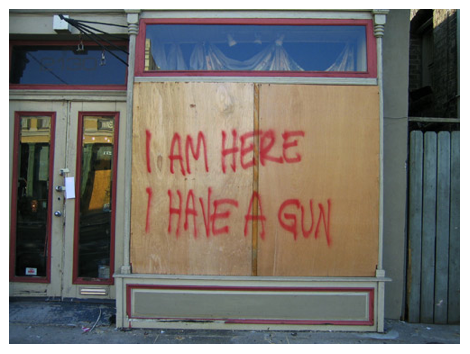
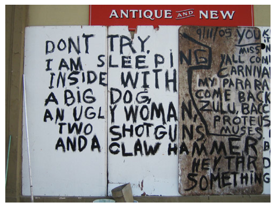

Thu, 04 Nov 2010 02:16:00 ·
Post-Katrina Graffiti on The Walls of New Orleans
 
A photography documentary by Richard Misrach as seen in his Destroy This Memory book, that was taken between October and December 2005. Using pocket-sized camera, Richard documented countless images of graffiti messages around New Orleans that reveals both physical and psychological toll Katrina took on the city and its people.
Read more here.